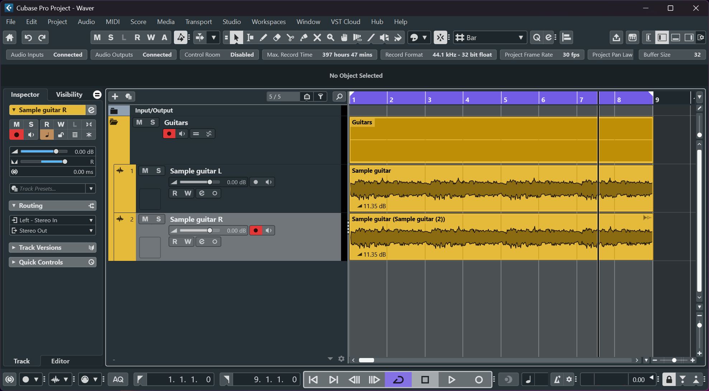

Hear Waver
Play a short sample and toggle the effect to compare processed (On) vs disabled (Off).


Off
The demo plays two aligned WAV files (disabled / enabled). Toggle to hear the simulated double-track effect.